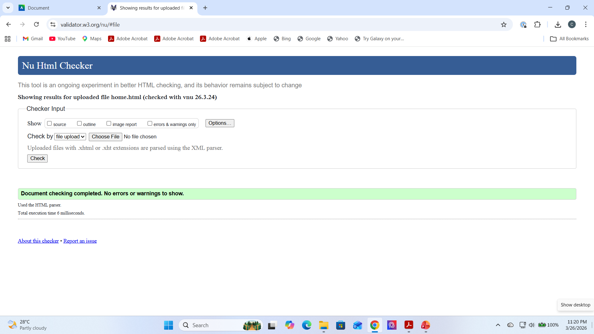
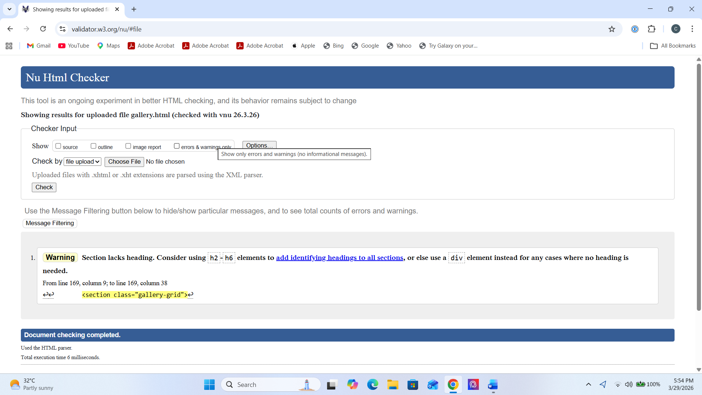

Home Page validation report
During validation of the Home Page, I found that small structural mistakes could still appear even when the page looked correct in the browser. I checked the page carefully and corrected issues related to HTML structure, link organisation, and element placement. This process helped me understand that a good Home Page needs not only clear design but also clean and standards-compliant code.

Back to Page Editor page
Gallery Page validation report
During validation of the Home Page, I found that small structural mistakes could still appear even when the page looked correct in the browser. I checked the page carefully and corrected issues related to HTML structure, link organisation, and element placement. This process helped me understand that a good Home Page needs not only clear design but also clean and standards-compliant code.

Back to Page Editor page
Content Page validation report
During validation of the Content Page, I focused on checking semantic structure, heading order, internal links, and image use. I found that content-heavy pages can easily develop small structural problems if the layout is not planned carefully. By correcting these issues, I improved both the technical quality and readability of the page, and I learned the importance of validating long pages as carefully as visually complex ones.